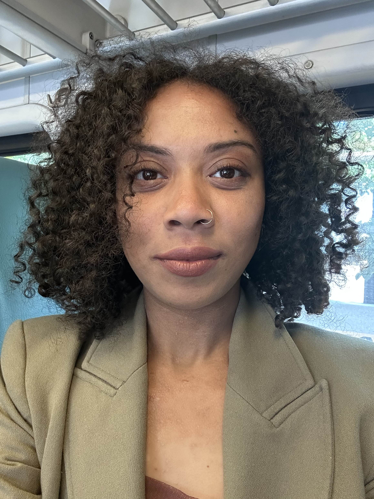

Artist & Transdisciplinary Researcher — NLP, color-emotion computation, regenerative design
I build cybernetic feedback systems that translate language, color, and emotion into tools people can use to navigate obstacles and design more just futures. My practice bridges digital ethnography and the striations of public and private space that create contrast — moving between poetry, machine learning, and policy so that meaning, not just message, gets to travel.
As a neurodivergent researcher and artist, I treat difference as feedback: signal about what to change so systems better align with and support the people they serve. My work draws on intersectional thinkers such as Toussaint Louverture and bell hooks, alongside contemplative lineages like yoga and meditation, and applies that theory to form — from a color-emotion matrix that turns journaling into reflection questions, to NLP tools that convert feeling and obstacle into actionable insight. I envision a world where everyone can create their own ethical energy, and I want my research to carry that regenerative, cross-cultural respect into the systems we build.
Roles where rigorous language technology meets care, credibility, and public good.
Language & NLP
Emotion and semantics in text — from RoBERTa-based emotion models to GPT-driven reflection tools that turn feeling and obstacle into insight.
Color-emotion computation
A tabular chromesthesia matrix mapping color to meaning, used across interactive journals, sound, and movement to make data legible as felt experience.
Regenerative & civic systems
Data science for public policy, community governance research, and bottom-up "pluriverse" structures grounded in health and ecological respect.
Color Oracle
An NLP tool that transforms emotions and obstacles into actionable insights, pairing a color-emotion matrix with a large language model.
World Bank 1960–2023 Dashboard
Interactive exploration of global development trends by indicator and time.
Anthropocene Choropleth
A study of how CO₂ emissions relate to education levels and internet usage across the US.
Pluriverse Journal
An interactive journaling interface built as a deterministic story form for planning bottom-up policy structures.
Color Dance & Sound Visualizer in Color
Webcam and audio works that respond to movement and sound with chromesthetic keys, color filters, and pose tracking.
Question Generator & Lazy Poem Maker
Spreadsheet-native tools that organize a user's data into stochastic reflection questions and generated poems using the color matrix.
Color Plotter
Determine healing pathways by sorting your data through the color-emotion framework.
Womb Journal
A stochastic reflection-prompt generator pairing chromesthetic poetry and image with the user's journaling.
Full catalog of 20+ works — zines, interactive tools, meditations, and dashboards, 2018–present — in the portfolio index.
Community Fellow — CU Boulder MEDLab
May 2026 – present. Speaking at Why We Come Together October 2026. Proposing UX enhancements to the Protocol Bicorder to distinguish timing and social value of input protocols; researching governance of Haitian maroon communities.
MS Data Science — Northwestern
February 2025 – present.Biological and epidemiological exploratory & inferential analysis in R. Color classification modeling and evaluation. Crime and food investigation GIS database creation and querying.
Tech Resident — The GIANT Room
Designed and delivered 12+ STEM and coding workshops for 100+ participants; translated program data into curriculum recommendations.
Literacy Educator — Global Kids
Built 40+ coding, storytelling, and civic-engagement curricula for 200+ NYC students, with a focus on underserved neighborhoods.
MS, Data Science
Northwestern University - Member of the Institute for Innovations in Developmental Sciences
MFA, Integrated Media Arts
Hunter College
BA, Creative Writing & Social Wellness Advocacy
The New School — Riggio Honors, Democracy & Writing
Technical
Python · SQL · R · Tableau · p5.js / ml5 · Adobe · G-Suite
Methods
NLP & emotion modeling · program evaluation · qualitative research · A/B testing · data visualization
Practice
Digital ethnography · participatory & community research · stakeholder communication